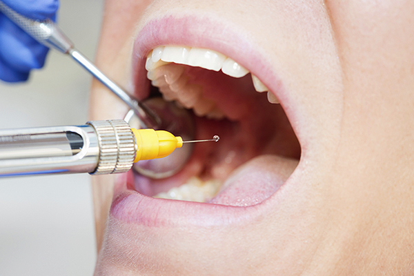

이를 뽑은 후 마취는 언제 풀릴까요?
마취 후 주의사항
마취를 진행하게 되면 감각이 제대로 느껴지지 않으니 주의가 필요합니다. . 특히 소아의 경우 스스로 구분하기 어려우니 부모님들의 지도가 필요합니다.
-
상악 마취 시 약 1시간, 하악 마취 시
약 3~4시간 가량 감각이 없어지므로 무의식 중에
혀, 볼 등 씹지 않도록 주의. -
마취한 부위를 씹었을 경우에는 24시간 후에 볼이나
혀가 하얗게 헤지고 부을 수 있으나 부작용은 거의 없음.
단, 2차 감염이 되지 않도록 상처부위를 따뜻한
식염수로 세척하고 청결을 유지. -
마취 직 후 뜨거운 음식 먹지 않기.
-
마취가 풀린 후 음식 섭취하기.
-
마취가 풀리는 도중 빨대사용 금지.
마취가 풀리는 시간
치과 마취 풀리는 시간은 개인마다 차이가 있습니다. 먼저 국소 마취의 지속 시간은 주사액의 양과 주사 부위에 따라 차이가 많습니다. 하지만 보통 이를 빼기 위해 마취를 한 경우 윗니 쪽에서는 1시간 정도, 아랫니 쪽에서는 2시간 정도면 거의 풀리게 됩니다.
그 이후에도 한 동안 약간 얼얼한 기분이 지속될 수 있으니 너무 걱정은 하지 않으셔도 좋습니다. 마취된 것 같은 기분이 그 다음날에도 계속될 경우에는 다시 치과에 방문해 문의 하시기 바랍니다.